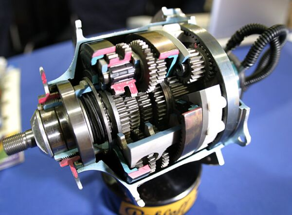

Планетарные втулки
Про планетарные втулки, наверное, слышали все. Если нет - то это коробка передачь в задней втулке. Все закрыто от пыли и грязи. Rohloff и Alfine 11 используется жидкое масло для смазки. У меня был Nihiki Hibrid 407 на планетарке INTER 7 от Shimano. Впечатления положительные. Теперь обсудим плюсы и минусы.
Плюсы
- Надежность
Замена масла производится каждые 5000 км. Втулка герметична. Не может быть спадания цепи, нечеткое переключение, когда цепь перепрыгивает со звезды на звезду. Тихий и плавный ход. Цепь постоянно натянута, нет перекоса, следовательно служит дольше. Некоторые откатали по 70000км. на Rohloff и никаких проблем.
- Идеальная работа в дождь, грязь, снег.
Это проверено мной. Был период времени, когда пришлось ездить по городу круглый год, по 7 часов каждый день. Погоду никто не выбирал. Дождь, снег, минус 30. Никаких нареканий, хотя на цепь было страшно смотреть.
- Быстрое переключение на любую передачу.
Многих именно это привлекает в планетрных втулках. В городе, где много торможений и разгонов это огромный плюс. Раньше перед светофором нужно было скидывать передачу, а тут просто стоя переключил и все.
- Высокое качество втулки.
Не знаю где об этом написать, напишу здесь. Вздумалось мне, на гибриде полазать по оврагам и лесам. Поменял заднюю звезду на побольше ( было 16, стало 19 ). Вначале было страшно в гору стоя раскачивать и всем весом 90кг. давить на педали, но втулка выдержала все мои издевательства. Я был приятно удивлен, что Inter 7 не умерла.
- Жестче колесо.
Из за высоких фланце втулки, 32 спиц и отсутствия "зонта", как на обычных кассетнеых втулках колесо жестче. Выдежривает большие нагрузки.
Минусы
- Цена.
Тут все предсказуемо. Надежные компоненты такого уровня не бывают дешевыми.
- Rohloff - 900 EURO.
- Shimano Alfine 11 - 320 EURO.
- Shimano Alfine 8 - 145 EURO.
- Вес.
1780 гр. для Rohloff. Для многих это неприемлемо, особенно на заднем колесе. Если убрать лишнюю теперь навеску, то все равно получим лишний кг. Под навеской будем понимать LX и выше.
- В домашних условиях неремонтопригодна.
- Грипшифт вместо триггерного переключателя.
Необходимо время, чтобы переучится. Мне удалось быстро привыкнуть к грипшифту, сейчас на AZUB MAX стоит именно грипшифт.
Фото
Gates Carbon Drive
Что это такое? А вот что. Подумал кто-то: "Ведь у мотоциклов цепь заменили ремнем, чем велосипед хуже". Технология относительно новая. Но уже около 150 производителей велосипедов используют Carbon Drive в серийно выпускаемых велосипедах. Вот список. Главная особенность этого решение - полное отсутствие смазки. Обслуживания нет вообще, полил водичкой, смыл грязь и все. На мой взгляд решение революционное.
Плюсы
- Меньший вес.
- Чистота.
- Простота облуживания.
- Тишина во время педалирования.
- Большой ресурс.
Минусы
- Цена.
- Gates Carbon Drive CDX CenterTrack Belt 118 tooth 57.95 USD
- Gates Carbon Drive CDX CenterTrack Rear Sprocket 24 tooth Nexus/Alfine 66.95 USD
- Gates Carbon Drive Center Track chainring 4, 104mm bolt circle 46t 54.33 USD
- Нужна особая рама с размыкаемым задним треугольником.

Иначе ремень не засунуть. Сейчас купить такую раму не состовляет большого труда. Титановый, железные, алюминевые, как для MTB, так и для фэтбайков. На фотографии Trek District. Стоят они не намного дороже обычных рам.
- Поставить можно только на втулку с одной звездой.
Это либо планетарные втулки или втулки с одной звездой. Много сингспидов (велосипеды с одной передачей) используют ремень вместо цепи.
На данный момент в России велосипедов с ремнем можно по пальцам сосчитать. Скорее всего, ситуация скоро изменится в пользу ременной передачи. Любителям зимней езды эта идея должна очень понравиться.
Фото

{kind=link}
{kind=link}
{kind=link}
{kind=link}
{kind=link}
{kind=link}
{kind=link}
{kind=link}
{kind=link}
Видео
Обзор от производителя …
Синглспид с ременным приводом …